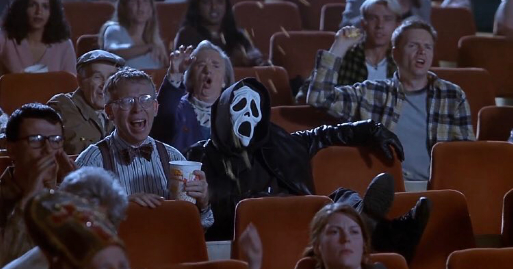
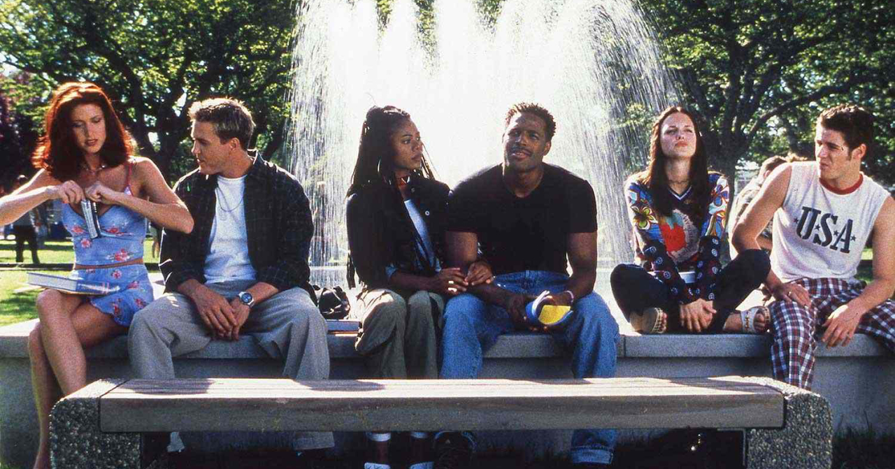
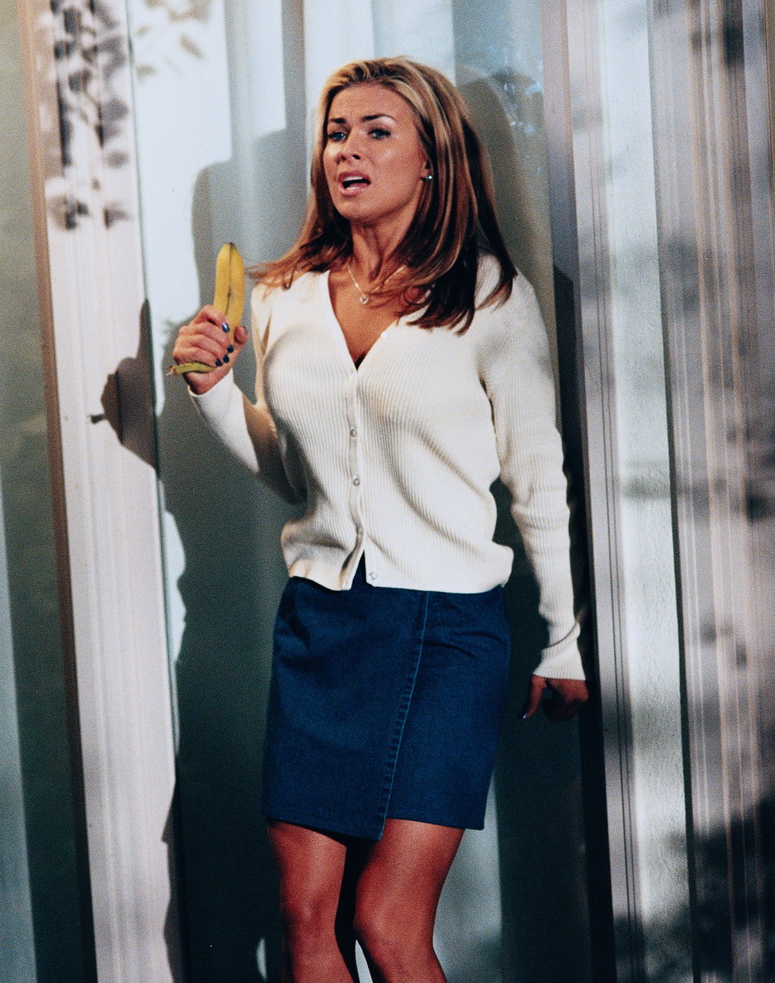
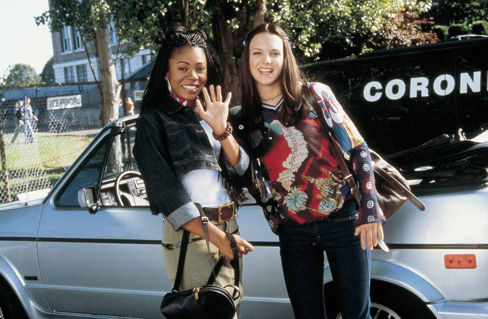

Scream defined the back half of the ’90s, whether you were a teenager with a multiplex within driving distance or a pre-adolescent kid who couldn’t see the movie and had to settle for the Halloween costume.
As influential as it was, by the time the original trilogy wrapped in early 2000, the whole thing already felt past tense. The distance between Scream 2, which opened in December 1997, and Scream 3, which didn’t arrive until February 2000, was an eternity. The slasher boom Scream had revived didn’t wait around. The twenty-six months in between produced a decade’s worth of teen-horror riffs. Some were hits (Halloween H20, The Faculty, I Know What You Did Last Summer) and others felt like filler (Disturbing Behavior, Idle Hands, Teaching Mrs. Tingle). The adjacent teen-movie bubble also peaked in the spring of 1999—Varsity Blues, She’s All That, 10 Things I Hate About You, and Cruel Intentions all stacked within a few months.

So Scream 3 walked into a tired room. It still opened to a franchise-record $34.7 million, but it limped to $89.1 million domestic, well under the $100M-plus each of its predecessors had cleared. If there was one thing driving Scream 3’s opening, it was that those pre-adolescent kids (myself included) were finally old enough to see a Scream movie in theaters. But broadly, the franchise had fizzled.
It was fitting that Scary Movie was waiting three months down the calendar, but no one suspected just how big it would play with audiences. The Wayans’ previous spoof, Don’t Be a Menace to South Central While Drinking Your Juice in the Hood (one of the greatest titles of all time), came out the same year as Scream, and grossed $20.1M domestic. But we were in a new era. Not only was Scary Movie tapping into the slasher phenomenon, it was the crescendo of the raunch wave (preceded by the Farrelly Brothers, American Pie, Tom Green, etc).
In July 2000, Scary Movie obliterated expectations and opened to $42.3M ($88M adjusted). That was 22% bigger than Scream 3’s record debut, the best opening ever for an R-rated movie to that point, and it ran all the way to $157M domestic ($325M adjusted). The parody outran all three Screams, opening weekend and final gross.

We simply love context here at Box Office Jedi, but there’s a reason for all the history with this one. From a certain angle, it is happening again.
The new Scream trilogy ran from 2022 to 2026—Scream (2022), Scream VI (2023), and Scream 7 (2026). The first two come out within a year of each other followed by a larger 3-year gap. And Scream 7, which opened February 27, did exactly what Scream 3 did a generation earlier. It set a franchise-record opening of $64.1 million.
And once again, Scary Movie is three months behind it. The rhyme is almost too neat. You could be forgiven for thinking the entire Scream revival existed to set the table for another Scary Movie.
So the forecast writes itself. In 2000, the spoof opened 22% above the Scream that preceded it. Apply the same jump to Scream 7’s $64.1 million and you land somewhere around $78 million for the new Scary Movie. That’s far above industry projections (ranging from $45–55 million), but we like to give it up to the powers greater than ourselves, and we don’t really have a reputation to uphold.
See the Scream vs Scary Movie Pt. 1 showdown >>
View the Scary Movie franchise chart >>
Except this is where the pattern runs into something it didn’t see coming.
Scary Movie isn’t opening into the exhausted, bubble-deflating market that made it look like a giant in 2000. It’s opening into the loudest horror moment in history.
Mid-90s horror had a clear identity, but after Scary Movie, the 2000s couldn’t quite find their thing, and the genre felt fragmented. There were Japanese remakes, torture porn, and 70s and 80s remakes. The reboots of It (2017) and Halloween (2018) were the turning point that signaled that horror could open like a Marvel movie. A decade later, with a pandemic in the middle, horror has proven itself as the most resilient genre of them all.
With Obsession and Backrooms riding the top of the box office the past few weeks, Scary Movie is reemerging at horror’s peak, not its rock bottom. The question becomes whether that helps or hurts Scary Movie’s arrival. The Wayans succeeded when they kicked horror when it was down. Can they do it when it’s up?
The reason that hardly seems relevant—and here comes the grouch at Box Office Jedi—but we feel that audiences already view horror (and movies) with a degree of parody. A movie is just an opportunity for a glib Letterboxd take. Even movies themselves don’t take themselves seriously, in that no movie feels comfortable lately with just being a movie. Ironically, the original Scary Movie, in all of its devious disregard, feels a hundred times more sincere than movies today.
See the Scream vs Scary Movie Pt. 2 showdown >>

So Scary Movie’s role and effectiveness as a good old-fashioned sendup is hard to say. Is it here to lampoon horror, or here to formalize how audiences have been watching it for years?
It will do well no matter what, and full disclosure, Box Office Jedi will be in line. There’s a chance the top 3 movies this weekend are horror adjacent. Masters of the Universe could go either way. It’s easy to imagine it underperforming, but there’s something about it that feels like Pirates of the Caribbean just before it debuted in 2003, when its best comp was a swashbuckler bomb from 1995, or at least 2016’s The Legend of Tarzan (if you don’t remember, that reboot had bomb written all over it but somehow just… didn’t).
This weekend’s biggest wildcard is another YouTube transplant. Expect Fathom Entertainment’s The Amazing Digital Circus: The Last Act to crash the charts, possibly sending Star Wars: The Mandalorian and Grogu out of the top 5 in its third weekend.
Our predictions below.
| 1 | Scary Movie | $77.8M |
| 2 | Backrooms | $29.2M |
| 3 | Masters of the Universe | $29.0M |
| 4 | Obsession | $25.6M |
| 5 | The Amazing Digital Circus: The Last Act | $11.4M |
| 6 | Star Wars: The Mandalorian and Grogu | $10.1M |
| 7 | Michael | $7.9M |
| 8 | The Breadwinner | $3.4M |
| 9 | Pressure | $3.2M |
| 10 | Power Ballad | $3.0M |
Here’s how I managed to see Scary Movie at the innocent age of 12. My friend Laura and I had plans to see Urban Legends: Final Cut on a weeknight in September. That, too, was Rated R, but not the Hard R that Scary Movie was. When Laura and her grandma arrived at my door to pick me up, I came downstairs with my latest issue of Entertainment Weekly and showed everyone that they had given the new Urban Legends an F grade. We all groaned, suspecting this would be a waste of our precious moviegoing allotment. It was nearing 9 p.m.—the last showtimes of the night—and surely we were out of options. I knew better, though. Yes, I had missed Scary Movie during its initial run. My mom and I had already battled that out. But it was back in theaters for a brief second run, and it was the only alternate showtime. We had minutes to get to the theater, and seconds to decide. My poor mother said yes, and off we went. Thanks, Ty Burr. Glad Owen Gleiberman was off duty that day.